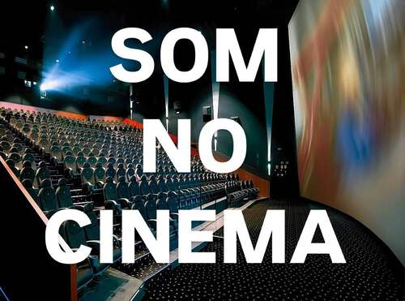
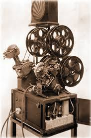
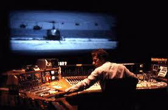
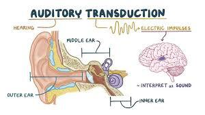
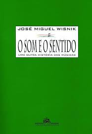

Este ano, Apocalypse Now celebra 45 anos de lançamento. O filme é um marco na história do cinema pela sua profunda exploração da loucura da guerra e pelas inovações técnicas que redefiniram a narrativa cinematográfica, especialmente no uso do som, com uma trilha sonora narrativa repleta de significados.
Neste artigo, explorarei a história do som no cinema, desde suas origens até a realização de Apocalypse Now, a sequência de eventos que culminaram na produção deste filme e sua duradoura herança para o som no cinema.
Como será detalhado, o som sempre influenciou a maneira como as histórias são contadas no cinema, desde seus primórdios até sua maturidade conceitual, representada aqui por Apocalypse Now, de Francis Ford Coppola.
O início (Spoiler: Nunca foi silencioso).
As primeiras projeções públicas de cinema foram acompanhadas pelos ruídos emitidos pelo projetor em funcionamento e, provavelmente, pelas vozes da plateia. Logo veio o acompanhamento musical dos fonógrafos.
"O ruído do projetor se afigurava não só desagradável e perturbador, mas acentuava, de modo drástico, o desumano e mecânico do espetáculo (...) a música, pela magia que lhe é própria, conseguiu exorcizar a angústia dos espectadores" 6.
Característica também das primeiras exibições, como mais um recurso para entreter a plateia, eram os performáticos comentaristas, que chegavam inclusive a encenar diálogos para os personagens na tela 7. Conforme os filmes passaram a ser exibidos para públicos maiores, a voz de uma pessoa e a música dos fonógrafos não eram suficientemente volumosos para preencher toda a sala. Assim, a figura dos comentaristas ficou reservada às salas modestas das pequenas cidades e lugares onde havia a preocupação de assimilação do cinema, um produto importado, como no caso do Japão, onde existiam comentaristas conhecidos como Benshis 8. Com o aumento da capacidade de público das salas, surgiu a música ao vivo e, conforme os filmes se tornaram mais longos, o número de músicos evoluiu de um simples piano para pequenas orquestras que com uma certa liberdade criativa executavam temas que reforçassem o caráter emocional de cenas, motivos musicais específicos para cada personagem e improvisos acompanhando o ritmo do filme. Efeitos sonoros, como sons de veículos, barulhos de animais e outros, eram reproduzidos utilizando um órgão elétrico com teclas especiais de efeitos, por instrumentos musicais e até por pessoas encarregadas especificamente da "sonoplastia" ao vivo, percutindo variados objetos.
O filme Metropolis (1927), de Fritz Lang, teve uma trilha musical original para orquestra composta por Gottfried Huppertz e também uma redução desta trilha para piano solo destinada aos cinemas menores que não dispunham de orquestra 16.
Mas o ambiente sonoro das salas era um complemento à experiência, da qual o criador do filme não tinha controle. No cinema mudo, os sons que integram o enredo, como um telefone a tocar ou uma sirene que perturba os funcionários de uma fábrica 17, são sugeridos por imagens.
Portanto, mesmo na época do “cinema mudo”, música era executada ao vivo nas salas, e os cineastas desenvolveram uma linguagem visual para representar sons importantes na cena 1.
"O cinema mudo estabeleceu alguns procedimentos para exprimir os sons: o mais corrente era mostrar em plano próximo a imagem de sua fonte, sino, animal, instrumento de música — como um insert voltando periodicamente" 18.
A necessidade de que o ambiente da cena seja "ouvido" dentro do espectador contribuiu com esta e várias outras técnicas de decupagem e edição para a linguagem do cinema. Estas, num primeiro momento do cinema sonoro, se viram ameaçadas pela febre dos "filmes falados", onde se reproduziam todos os sons do momento da gravação, em parte por não se ter ainda uma técnica para editar a trilha sonora, e também pelo grande número de diretores de teatro que invadiram os estúdios do cinema, com a ideia de que fazer filmes sonoros seria como filmar uma peça teatral, o que apenas evidenciou que a nova tecnologia precisava também de uma nova linguagem.
"Por volta de 1929, o número de publicações dedicadas à teoria do cinema indica que uma significativa comunidade mundial considerava o cinema uma poderosa forma de arte. Estetas apareceram por toda a parte para debater a nova direção que o cinema deveria tomar depois que o som perturbara seu equilíbrio. Todo esse debate ocorreu numa atmosfera definitivamente formativa. Paradoxalmente, a chegada do som parece marcar o declínio da grande era da teoria formativa do cinema. No entanto, por volta de 1935, já era considerado certo em quase todos os círculos cultos que o cinema era uma arte, independente de todas as outras artes, mas tendo em comum com elas o processo de transformação através do qual um assunto banal torna-se uma declaração eloquente e brilhante" 19.
Som na película
Diversos inventores tentaram criar um sistema que sincronizasse som gravado com as imagens projetadas. Douglas Gomery, em seu artigo The Coming of Sound, expõe que houve tentativas com resultados significativos já em 1907, porém motivos comerciais adiaram o surgimento de um sistema aperfeiçoado para o final da década de 1920 9. O grande sucesso de crítica e público The Jazz Singer (1927), que utiliza a tecnologia sound-on-film para sincronizar a trilha de som com as imagens, gerou uma rápida conversão nos estúdios, que em poucos meses se reformaram com isolamento acústico e aquisição de novos equipamentos, adotando o sound-on-film como a primeira tecnologia padrão do cinema sonoro, sendo esse considerado o marco do seu surgimento 10.
Essa fase é marcada pela febre inicial do "cinema falado", que simplesmente reproduzia no filme todos os sons gravados durante a captação da cena, aproximando o cinema à linguagem do teatro e deixando para trás a interessante linguagem visual desenvolvida para representar sons em cena na era do cinema “mudo”. Como reação, Eisenstein, Pudovkin e Alexandrov escreveram o Manifesto Sonoro, onde afirmavam que "o som, tratado como um novo elemento de montagem, divorciado da imagem visual, irá inevitavelmente introduzir novos significados de enorme poder para a expressão" 2.
No filme O Vampiro de Dusseldorf (1931), considerado o primeiro filme a utilizar o som dramaticamente, o diretor Fritz Lang utiliza um motivo musical assoviado pelo personagem do assassino para representá-lo, sem a necessidade de sua imagem 3.
"O som sincronizado dentro do filme mudou radicalmente o cinema. A estabilização da velocidade de projeção, feita necessária pela vinda do som, teve consequências que foram além do que qualquer um poderia ter previsto. O tempo fílmico não era mais um valor flexível, mais ou menos transposto dependendo do ritmo da projeção. O tempo ganhou um valor fixo; o cinema sonoro garantiu que x segundos na edição teriam a mesma duração na exibição. No cinema mudo, uma tomada não tinha uma duração interna exata; folhas balançando ao vento ou ondas na superfície da água não tinham uma temporalidade absoluta ou fixa. Cada sala tinha uma certa margem de liberdade em ajustar a velocidade da projeção. Não é coincidência que a mesa de editar motorizada com sua velocidade padrão (a Moviola) não tenha aparecido até a era do cinema sonoro." 4
Com o surgimento da Moviola, toda a indústria cinematográfica passou a adotar o som sincronizado, e novas técnicas de gravação, edição e mixagem de som formaram o conceito de montagem sonora.

"Com o decorrer do tempo, o uso do som aliado à montagem fílmica vai adquirindo graus maiores de sofisticação, na medida em que os subelementos constitutivos do som são destrinchados e trabalhados. Não somente as características de um som são 'exercitadas' — timbre, altura, intensidade, etc. —, mas também os diferentes elementos sonoros — diálogos, música, ruídos/efeitos, ambiência — são combinados, contribuindo com novas e variadas possibilidades para a gramática fílmica." 5
"A história inicial do som nos filmes produzido dentro dos estúdios é marcada pelas limitações dos microfones condensadores de carbono então usados. Não direcionais, frágeis, sensíveis ao vento e outros ruídos ambientes, necessitando de um estágio de amplificação muito próximo ao microfone, esses microfones requisitavam condições muito especiais. Prover essas condições influenciava também a gravação de imagens" 11.
Como o som na tecnologia sound-on-film era registrado fotoeletricamente, o desenvolvimento tecnológico que permitiria mais definição acompanhava também a qualidade técnica dos negativos de filmes, que deram um salto de qualidade na década de 1930. O avanço das técnicas de gravação e qualidade dos projetores das salas de exibição possibilitou cada vez mais ousadia na concepção das trilhas, que passaram a suportar mais sons ao mesmo tempo sem que tudo soasse uma grande confusão. Porém, a verdadeira independência do som das imagens, pelo menos em termos técnicos, veio com as fitas magnéticas, disponíveis ao fim da Segunda Guerra Mundial 12, permitindo que um número infinito de fontes sonoras fosse registrado, editado e mixado. A partir da era magnética, o cinema, o rádio e a indústria musical compartilhavam o mesmo meio de registro sonoro, e o salto tecnológico passou a ser triplo. Mesas de mixagem com multipistas e inúmeros recursos da engenharia sonora passaram a estar disponíveis, permitindo a elaboração de trilhas sem limites para a imaginação. Embora experimentos muito avançados já houvessem sido feitos na era do som fotoelétrico, tanto em montagem quanto em desenho sonoro. Por exemplo, a trilha do filme Rapt (1933), em que o compositor Arthur Hoérée antecipou práticas da música concreta ao realizar uma elaborada edição sonora de trovões, estouros e outros sons (também pioneiro em utilizar sons reversos) para criar uma tempestade assustadora 13.
Revolucionárias também foram as chamadas peças de animação sonora, que eram sons criados a partir de desenhos e padrões geométricos nos negativos de filmes, feitos diretamente à mão ou fotografados, que, ao serem interpretados pelo leitor ótico, resultavam em sons completamente originais, sendo um precursor da síntese sonora e da música eletroacústica, onde Norman McLaren foi um dos pioneiros.
Ainda na década de 1930, o russo N.V. Voinov conseguiu, com animação sonora, reproduzir sinteticamente o prelúdio em C# menor de Rachmaninoff e Moments Musicaux de Schubert 14.
Embora essa técnica tenha se mostrado muito precisa rítmica e tonalmente, a animação sonora parece ter sido usada majoritariamente para a trilha de desenhos e filmes abstratos. O uso de sons sintetizados para compor ruídos e música só foi realmente utilizado pelo cinema décadas mais tarde com o surgimento dos sintetizadores musicais.
Objetos Sonoros
Se os experimentos com som no início do cinema sonoro anteciparam algumas práticas e acabaram influenciando a música do modernismo, a partir da era da fita magnética seriam conceitos da música concreta e eletroacústica que mudariam a forma como eram concebidas as trilhas sonoras de cinema, atenuando a tradicional distinção entre música, fala e ruído, quando os sonoplastas passaram a se perguntar:
"É o grito fala ou ruído? É a música eletrônica ruído também?" No filme Psicose (1960), quando a mulher grita, esperamos ouvir uma voz, mas, ao invés disso, ouvimos violinos "gritantes" 20.
O músico Pierre Schaeffer, conhecido como pai da música concreta, esteve envolvido com som para rádio e cinema e publicou, em 1946, uma série de três artigos na revista Revue du Cinéma sobre “o elemento não visual do cinema”, onde ele fez uma representação gráfica da trilha de ruídos em função do tempo, uma espécie de partitura para os ruídos (junto com diálogos e música), e comenta sobre a importância da elaboração de sons inéditos contra o costume de usar sons provenientes de bancos sonoros, que era a prática da época 21. Alguns anos mais tarde, o seu conceito de objeto sonoro, publicado em Tratado dos Objetos Musicais, se tornou referência para a montagem sonora narrativa.
"Existe objeto sonoro quando eu tiver completado, ao mesmo tempo materialmente e espiritualmente, uma redução ainda mais rigorosa que a redução acusmática. Não apenas me restrinjo às informações fornecidas pelo meu ouvido (materialmente, o véu de Pitágoras seria suficiente para obrigar-me a isso), mas tais informações já dizem respeito apenas ao evento sonoro em si mesmo. Não procuro mais, por seu intermédio, obter informações sobre outra coisa (o interlocutor e o seu pensamento). É o próprio som que eu viso, é a ele que identifico" 22.
Uma nova geração de cineastas
Alta Fidelidade
A segunda revolução sonora do cinema foi na década de 1970 com a adoção do sistema Dolby em filmes de Robert Altman e Coppola 15. Este sistema de redução de ruídos, introduzido primeiramente na indústria musical, quando adaptado ao cinema elevou a trilha sonora a um nível de fidelidade praticamente impossível de ser distinguido da realidade. Com o uso do Dolby, foram possíveis grandes variações de volume entre os sons, permitindo momentos de quietude alternados com grandes impactos sonoros. Também a ausência de chiado na reprodução da fita magnética, junto com as modernas salas isoladas e projetores silenciosos, introduziram pela primeira vez no cinema o verdadeiro silêncio.
O surgimento de cursos específicos dentro das universidades permitiu que o círculo de discussões que existiu na época da consolidação do cinema sonoro, finalmente influenciasse uma nova geração de cineastas de uma maneira sonoro-consciente.
Apocalypse Now é um importante filme para a história do cinema, pela sua qualidade técnica, contexto social, aprovação da crítica, mas, talvez, sua maior inovação aconteceu em sua trilha sonora. Foi o primeiro filme a apresentar o som distribuído em 5 canais (mais uma caixa de subgraves) dentro da sala de exibição, formato que depois virou um padrão da indústria 23.

O editor de som e imagens, Walter Murch, trabalhou os sons do filme com significado, valendo-se de um tempo e liberdade criativa raramente disponíveis na indústria.
"Eu fui muito influenciado pela música concreta quando a conheci aos 10 anos de idade, e fiquei completamente encantado pela ideia de que você poderia fazer música a partir de sons. O que, desde então, tem sido uma constante influência sobre todo o meu trabalho. Mas os filmes que eu havia feito antes de Apocalypse Now tinham sido todos em mono (American Graffiti, A Conversação). Aqui não era apenas um filme estéreo, mas todo um novo formato" 24.
Declarou Walter Murch, explicando que, devido às adversas condições de filmagem, todo o som do filme foi criado e adicionado depois.
"Apocalypse Now retrata o poderoso impacto que a guerra teve na consciência americana (...) a sensação de estar imerso no campo de guerra é tão vívida e convincente que é como se estivéssemos assistindo um filme sobre este tema pela primeira vez" 25.
O filme foi produzido pela produtora independente, Omni Zoetrope. O processo de criação e implementação de um avançado sistema de edição de som é contado por Walter Murch em seu artigo Stretching Sound to Help the Mind See:
"Em 1969, eu fui contratado para criar os efeitos sonoros e mixar The Rain People, um filme escrito, dirigido e produzido por Francis Ford Coppola. Ele era um recém-formado na escola de cinema, como eu, e estávamos ansiosos para fazer filmes profissionalmente na maneira como fazíamos na escola. Francis achava que o som de seu filme anterior, Finian's Rainbow, tinha sido prejudicado pela burocracia e inércia tecnológica dos estúdios, e ele não queria repetir aquela experiência. Ele também sentia que, se ficasse em Los Angeles, não seria capaz de produzir o tipo de filme independente que tinha em mente. Então ele, seu colega de classe George Lucas, eu, e nossas famílias, nos mudamos para São Francisco para dar início à Omni Zoetrope. E o primeiro item na agenda era a mixagem de The Rain People no inacabado escritório em um velho galpão na rua Folsom. Dez anos antes, isto seria impensável, mas a invenção do transistor mudou as coisas tecnologicamente e economicamente de tal maneira que parecia natural que Francis, com 30 anos de idade, fosse para a Alemanha comprar, quase à vista, um equipamento de mixagem e edição da K.E.M. em Hamburgo, e me contratar, então com 26 anos, para usá-lo. (...) Desde o seu início, a ideia da Zoetrope era evitar o departamentalismo que era um subproduto da complexidade da tecnologia sonora, que costumava colocar os mixadores contra as pessoas que criavam os sons. (...) Nós sentimos que não havia razão para que a pessoa que desenvolvesse a trilha sonora não pudesse também mixá-la, e que o diretor pudesse conversar com ela, o desenhista sonoro, sobre o som do filme da mesma maneira com que ele conversava com o diretor de fotografia sobre a aparência do filme" 26.
Em seu livro, Num Piscar de Olhos, Walter Murch explica por que Apocalypse Now levou tanto tempo para ser editado:
"Quanto mais material houver para trabalhar, mais alternativas têm de ser consideradas, uma vez que um maior leque de opções exige naturalmente mais tempo de consideração. Isso é verdade para qualquer filme com uma média alta de material filmado, mas no caso particular de Apocalypse Now o problema foi maior pela função da temática delicada de que tratava, de uma estrutura cuidadosa e original, das inovações tecnológicas em todos os campos e da obrigação que todos os envolvidos sentiam de fazer o melhor trabalho de que eram capazes" 27.
Teoria consolidada

Por trilha sonora, compreende-se todas as informações sonoras, que, assim como os constituintes do cinema como um todo, também não devem ser analisadas isoladamente, enquanto sua expressividade tenha sido concebida no conjunto desses elementos. Sendo assim:
"O sistema expressivo sonoro integra quatro variantes: expressão oral, música, sons e silêncio.
1) Expressão oral — Saussure (1916) concebe a palavra como um signo que une um conceito e uma imagem acústica. Para o autor, as relações que o signo mantém com a realidade são absolutamente convencionais. No entanto, interessa também destacar os fenômenos paralinguísticos que se produzem na realização dos atos de fala — entoação, inflexões, modulações de voz.
2) Subsistema de música — Integra uma diversidade de timbres próprios dos instrumentos (acústicos, eletroacústicos e eletrônicos) e da voz humana. A música introduz uma subjetividade emotiva, evoca o não discursivo, o não figurativo. 'O seu modo de significação é pansêmico, quer dizer, admite tantos significados possíveis quantos os ouvintes que a escutam' (Cebrián Herreros, 1995: 361).
3) Subsistema de sons — Integra os sons não icônicos (usualmente designados ruídos), pois não permitem identificar qual a fonte que os emite, e os sons icônicos, os quais produzem uma imagem acústica que remete para uma determinada realidade. Os sons distribuem-se ao longo do que poderíamos chamar uma escala de iconicidade; 'o som icônico sobrepõe-se às falas e às línguas (...) Está integrado por signos auditivos dimanados dos objetos, animais e pessoas nos seus movimentos e ações. Aporta um elevado grau de iconicidade à informação' (idem: 363).
4) Subsistema do silêncio — Entendemos por silêncio a sensação de ausência de som, um efeito perceptivo que se produz por um determinado tipo de formas sonoras. O efeito-silêncio é, por vezes, carregado de significação. Rodriguez Bravo (1998: 153-154) distingue três usos expressivos:
- Uso sintáctico — Quando os efeitos-silêncio se utilizam para organizar e estruturar os conteúdos visuais, isto é, quando atuam simplesmente como instrumento de separação.
- Uso naturalista — Quando se utilizam como imitação restrita da realidade referencial. Os efeitos-silêncio expressam informações objetivas muito concretas sobre a ação narrada.
- Uso dramático — Utilização consciente do efeito-silêncio para expressar algum tipo de informação simbólica. Exemplo: morte, suspense, vazio" 28.
Pode-se considerar toda a composição da trilha sonora uma espécie de composição musical, como a música concreta? Provavelmente não, porque não se destina a ser apreciada por si própria sem as imagens, mas o que seria então este trabalho de composição e como pode ser classificado?
"Quando a criança ainda não aprendeu a falar, mas já percebeu que a linguagem significa, a voz da mãe, com suas melodias e seus toques, é pura música, ou é aquilo que depois continuaremos para sempre a ouvir na música: uma linguagem em que se percebe o horizonte de um sentido que no entanto não se discrimina em signos isolados, mas que só se intui como uma globalidade em perpétuo recuo, não verbal, intraduzível, mas, à sua maneira, transparente" 29.
Nesta passagem do livro O Som e o Sentido, Wisniki convida à reflexão. É a trilha sonora uma linguagem? Ou um “sentido intraduzível, mas à sua maneira transparente”, como a própria música?

Em seu artigo Teaching the Soundtrack, Claudia Gorbman propôs que, na perspectiva narrativa, um elemento da trilha sonora pode ser diegético, não diegético ou metadiegético 30. Sendo:
- Diegético: sonoridades objetivas, pertencentes ao universo sonoro dos personagens (cena).
- Não diegético: sonoridades subjetivas, que complementam a interpretação da cena.
- Metadiegético: sons subjetivos, pertencentes ao universo interior dos personagens, oníricos.
Todos os sons podem ainda estar ou não presentes no campo visual, estando ou não em sincronia.
Apocalypse Now
No filme Apocalypse Now, Walter Murch compôs a trilha sonora de forma que “qualquer estímulo sonoro pudesse servir para acentuar tanto o caráter verossímil quanto o caráter emocional da obra, seja ele música, ruído ou voz” 31.
Uma das formas como ele atinge esse objetivo é justamente interpolando a perspectiva narrativa de um som (geralmente através da mudança de seu timbre). Por exemplo, na cena em que os personagens estão no barco ouvindo um rádio, inicialmente o som desse rádio é diegético, ouve-se um locutor dando notícias, e o timbre é característico do alto-falante de um pequeno rádio (predominância de frequências médias, sem graves e agudos).
Logo começa a tocar a música Satisfaction 32, e os soldados começam a cantar e dançar, enquanto o timbre da música vai ganhando frequências graves e agudas, e intensidade de volume, passando ao primeiro plano da trilha sonora. Assim, a música deixa de ser verossímil com o cenário, transitando de diegética para não diegética, indicando a imersão dos personagens na audição musical, reforçando a ideia do seu estado emocional de exaltação.
Uma semelhante transição de planos acompanhando o estado do personagem também é realizada com um som de helicóptero na primeira cena 33, quando o barulho das hélices transita de um som sintetizado (e metadiegético) para um som realista (e diegético, o helicóptero não aparece em cena, mas é sugerido que este sobrevoa o prédio) no momento em que Willard acorda do seu devaneio e levanta-se da cama.
Em muitos momentos do filme, também se opta por não incluir todos os sons naturalistas de cena (chamados de som de Foley 34), para reforçar o aspecto onírico (dando espaço para música e sons metadiegéticos) ou então para criar um ambiente sonoro idêntico ao que o personagem estaria ouvindo na realidade, reproduzindo a chamada atenção seletiva 35 do ser humano, como, por exemplo, na cena em que os personagens saem do barco e entram na floresta para colher mangas. Todo o estado de tensão da cena é enfatizado pela trilha sonora através do seu silêncio gradual (o que gera também desconforto e apreensão no espectador):
"Quando Chef para para urinar, Willard ouve um ruído semelhante a alguém pisando em folhas secas. Diante do perigo da existência de vietnamitas no lugar, Willard se concentra para tentar achar a origem do som. A floresta se cala e a trilha sonora passa a acompanhar as escolhas sonoras de Willard. Na revelação que o ruído havia sido feito por um tigre, a floresta volta à intensidade original" 36.
O silêncio é um dos principais recursos utilizados por Walter Murch para enfatizar o trabalho de mudança de planos realizados com os ruídos e música do filme.
"No universo da trilha sonora, o silêncio não é apenas a ausência completa de som, mas também a ausência seletiva de som. Em outras palavras, ele pode ser localizado, tal como a ausência de som, em uma única pista. As possibilidades expressivas das combinações de som e silêncio nas pistas de som são vastas. É possível, por exemplo, suprimir todo o som da pista de ruído, preenchendo o vazio sonoro com música. Esse é um procedimento comum, que costuma conferir à situação um caráter surreal, fantástico e onírico. A supressão dos sons naturalistas possui uma qualidade onírica, pelo fato de não ter um paralelo em nossa experiência cotidiana. É possível, também, criar uma situação em que nenhuma palavra seja dita, deixando o espaço sonoro totalmente preenchido por música e ruídos. É possível criar sem música e, é claro, outras em que não há qualquer tipo de som. No entanto, esse silêncio absoluto resulta, geralmente, em situações bastante artificiais e produz um forte impacto, em muitos casos incômodo, no espectador" 37.
Podemos nos perguntar novamente: é a trilha sonora uma linguagem? Assim como a trilha visual, pode-se dizer que não; não possui articulação dupla nem sintaxe, etc. Porém, certamente, o seu uso narrativo é capaz de transmitir “mensagem” do seu “emissor” para o seu “receptor”, e, nesses casos, ela pode adquirir o status de uma linguagem limitada.
"Se a gravação sonora é como uma linguagem neste sentido — que ela transmite uma latente subjetividade espaço-psicológica, que pode ou não mimetizar aquela da experiência diária — então o que é mais importante para uma crítica e histórica consideração das práticas sonoras em filme será uma detalhada análise de diferentes estratégias do uso do som" 38.
Trilha Musical Original
No filme Apocalypse Now, a trilha musical original é apresentada em caráter de música de fundo 39, ou seja, sem início ou fim definido, contribuindo mais com a sua sonoridade do que com a sua forma para a expressividade da cena.
"O caminho da música no cinema, começando pelo período mudo até a maturidade do cinema sonoro, apresenta uma tendência no sentido de reduzir a quantidade de música e, consequentemente, de se preocupar mais com sua expressividade. Havendo menos música, seu impacto tornou-se, ao mesmo tempo, muito maior, ampliando a capacidade de expressão audiovisual. A música no cinema caminhou no sentido da redução e não do acúmulo" 40.
Os temas e melodias foram escritos por Carmine Coppola, e a sua execução foi realizada por um pequeno grupo de músicos tocando sintetizadores. O caráter eletrônico da música certamente é impactante ao espectador, condizente com a fotografia do filme, que é de cores saturadas e contrastantes.
"O conceito de Francis sobre a trilha musical evoluiu quando ele começou a trabalhar no filme. Carmine recorda: 'No princípio, Francis viu que ele teria que ir além do rock and roll. Ele queria algo operístico e sinfônico. Queria combinar a música popular com a música sinfônica para destacar a emoção dramática'. Francis concebia uma trilha musical que não fosse separada dos diálogos e efeitos de som, mas era parte de uma montagem em constante evolução a partir de outros elementos da trilha sonora. (...) 'Desde o início, Francis sabia que as metralhadoras tinham de se tornar o baixo ostinato, e o gemido das balas a linha melódica secundária'" 41.
Não trabalha sozinha, ela é mais um dos elementos usados com importância narrativa, junto com os sons ambientes, efeitos sonoros especiais e sons de Foley. Irá ocupar o primeiro plano principalmente nos momentos em que se deseja criar uma suspensão na linha do tempo, ou uma sumarização 42, como acontece nos momentos em que Willard está lendo o dossiê de Kurtz, ou nas mudanças de cenas que são realizadas com sobreposições de imagens do barco avançando pelo rio, quando se nota a afinidade que o timbre dos sintetizadores tem com o som do motor do barco e com os sons ambientes da floresta, de forma que o próprio ritmo dos insetos e pássaros se encaixam entre as notas musicais.
A produção das músicas foi comandada pelo especialista em sintetizadores Patrick Gleeson, junto com mais cinco músicos que faziam experimentos com as linhas melódicas, desenvolvendo os timbres e gravando, somando e ditando várias pistas para compor a "orquestra" imaginada por Francis:
"Nós fazíamos isso até que tivéssemos oito pistas. Então, nós mixávamos as oito pistas em estéreo, e apagávamos as oito. Nós elaboramos umas 100 vozes usando esta técnica. Algumas vezes, Shirley e Nyle trabalhavam juntos, Shirley tocando teclado enquanto Nyle tocava o seu EVI. Bernie frequentemente trabalhava com Andy Narrel para produzir linhas de timbres complexos. Patrick, em contramão, geralmente preferia trabalhar sozinho, usando técnicas que ele desenvolveu em seu próprio estúdio. Como ele mostra: 'Eu tenho um teclado EMU onde eu posso armazenar muita coisa na memória. Primeiro, eu carregava as notas na memória e deixava executando enquanto eu trabalhava com os movimentos que eu queria no painel. Uma vez pronto, eu tocaria manualmente sobre a pista que os sintetizadores tinham gravado. As pistas nessas fitas tendem a estar desorganizadas e fragmentadas, o trabalho de Rubinson era mixar estas fitas de 24 pistas em um grupo de pistas em uma nova fita para que então a) os timbres fossem agrupados de uma maneira que fizesse sentido musical (timbres de cordas em um grupo, timbres de sopro em outro, etc.) e b) o nível de balanço estivesse aproximadamente correto na nova fita'" 43.
Música Diegética
As escolhas das músicas que tocam nas cenas do filme, não confundir com a trilha musical original, possuem também uma narrativa própria. Logo na primeira cena do filme, The End, do grupo The Doors, provoca a interpretação do que a sua letra está dizendo: seriam as guerras a causa do fim da humanidade, o apocalipse? A música volta a tocar na última cena, encerrando o filme em unidade com o seu começo. Sobre a escolha dessa música, Walter Murch comentou:
"O engraçado é que, onde quer que colocássemos uma música do The Doors, era como se tivéssemos Jim Morrison na sala olhando para as imagens e vindo com palavras para descrevê-las. Era até demais. Todas as músicas clássicas do The Doors, quando colocávamos sobre o filme, estávamos fazendo exatamente o que você não quer que a música faça, elas estavam simplesmente duplicando o que você está vendo visualmente ou comentando exatamente sobre isso. Então, nós mudamos de rumo. Mas eu acho que The End fica ainda mais poderosa por causa do seu posicionamento no começo e no fim e mais em nenhum lugar ao meio" 44.
Quando os personagens escutam Satisfaction, dos Rolling Stones, tocando no rádio, é um momento em que se sentem em casa novamente e esquecem que estão em uma guerra, ninguém quer estar em uma guerra, e a letra da música provoca ironia: Quem não está se satisfazendo em uma guerra? Também na cena em que as dançarinas da Playboy se apresentam para os soldados, ouvimos o clássico do rock and roll Suzie Q ("Suzie Mate!"). Em uma das cenas clássicas de Apocalypse Now, um esquadrão de helicópteros ataca duas vilas vietnamitas ao som de A Cavalgada das Valquírias, de Wagner. Além do grande impacto que a sonoridade grandiosa dessa obra soma às imagens aéreas, também existe a escolha por um compositor que notoriamente era admirado por Hitler, ligado a valores nacionalistas. Portanto, pode-se interpretar que existe um subplano ao qual pertencem as músicas, uma voz do diretor.
This Is The End
Um momento de grande sentido literário atribuído à trilha sonora é no final do filme, quando Kurtz recita o poema The Hollow Men, de T.S. Eliot. A começar pela palavra Hollow (vazio) contida no título e a ambientação que os ruídos ambientes (gotas de água e insetos), cheios de reverberação, agregam ao cenário, que então se mostra muito maior, húmido e vazio, como o estado emocional em que se encontram Kurtz e Willard. Sobre a relação deste poema com o filme, cabe aqui uma interessante citação, embora já extrapolando o campo da trilha sonora:
"Este poema de T.S. Eliot, parcialmente recitado pelo Coronel Kurtz, surge inserido em Apocalypse Now com o objetivo de transmitir toda a carga de especulação filosófica que envolve o filme. O poema é dominado por uma atmosfera política, fundamental para o seu eco no filme (o fanatismo e a loucura). The Hollow Men apresenta um mundo de silêncio: We grope together / And avoid speech (Eliot, 1961), inércia: Leaning together e destruição: This is the dead land / This is the cactus land, povoado por homens sem rosto: Headpiece filled with straw, sem voz: Our dried voices, when / We whisper together / Are quiet and meaningless e sem vontade própria: Behaving as the wind behaves. Estes homens não passam de espectros: Shape without form, shape without colour, estão despojados da sua dimensão humana uma vez que não possuem personalidade nem vida espiritual e são incapazes de agir: Paralysed force, gesture without motion. Estes homens são all mankind uma vez que Conrad’s affirmation is that all men are hollow, all fated to endure the condition that Eliot figures so allusively (...) and all fated to be blind to their condition (Southam, 1994: 205). Neste momento, importa mencionar a utilização feita por Eliot da Divina Comédia de Dante, utilização essa que Southam sistematiza na sua obra já citada. Southam identifica estes homens vazios com as sombras que navegam no rio e que são rejeitadas por ambas as margens — o Inferno: death’s dream Kingdom e o Paraíso: death’s other Kingdom — estando por isso condenadas a navegar nele eternamente. Eles são como a maioria dos homens que passam pela vida sem terem a percepção da realidade, não praticam de forma consciente nem o bem nem o mal e, como tal, parecem despojados da sua dimensão humana. Daí, se atendermos à afirmação de Eliot: So far as we are human, what we do must be either evil or good; so far as we do evil or good, we are human; and it is better in a paradoxical way, to do evil than to do nothing; at least, we exist. (Eliot, cit. por Gomes, 1997: 47). Vislumbra-se igualmente no poema a existência de uma segunda categoria de homens: Those who have crossed / With direct eyes, to death’s other Kingdom. Southam relaciona este Kingdom com o Paraíso de Dante. Estes homens passam por um estado de transição: death’s twilight Kingdom que Southam diz ser the condition in which man has to face the truth about himself and life (Southam, 1994: 205). Neste estado, têm a percepção da sua condição de seres humanos, têm a percepção do sentido da vida. Este momento é, afinal, um momento de esperança simbolizado por The eyes reappear perante uma visão de (...) perpetual star que Southam identifica como a visão que Dante tem de Deus. Os homens que experienciam este estado podem praticar o bem na sua verdadeira essência e assim ambicionarem a um lugar no Paraíso, um higher, perfect world of beauty, light and music (Southam, 1994: 204)" 45.
Apocalypse Now foi concebido com a missão de ser um filme poético, sobre uma situação causada pelo extremo vazio humano, que é a guerra.
“O som tem um poder mediador, hermético: é o elo comunicante do mundo material com o mundo espiritual e invisível. O seu valor de uso mágico reside exatamente nisto: os sons organizados nos informam sobre a estrutura oculta da matéria no que ela tem de animado” 46.
"A fidelidade não é uma 'reprodução' mas uma reconstituição; em realidade, ela resulta de uma série de escolhas e de interpretações que o dispositivo gravador torna ao mesmo tempo possíveis e necessárias. Admitir-se-á, portanto, que o técnico de som ou o engenheiro de gravação deve enfrentar questões que já não são puramente técnicas, mas cuja finalidade é arbitrada pela escuta sensível, pelo julgamento musical" 47.
Esta passagem de Tratado dos Objetos Musicais, de Pierre Schaeffer, reflete o tipo de pensamento musical que Walter Murch trouxe à trilha do cinema, representando, com a "poética timbrística" dos ruídos, o universo interno dos personagens. No filme, há algumas passagens em que Willard ouve a gravação de uma voz do General Kurtz, mas o personagem de Kurtz só aparecerá na tela nas últimas cenas. Esse feito, que Michel Chion chama de Acousmêtre, de executar um som, no caso uma voz, sem mostrar a sua fonte ao longo do filme, até que o espectador tenha tempo para utilizar a sua imaginação, e então exibir a fonte surpreendendo-o 48, é referente ao que foi feito com a voz da mãe em Psicose (1960) 49, com o computador HAL em 2001: Uma Odisseia no Espaço (1968) 50, e o mágico em O Mágico de Oz (1939) 51. Outro exemplo utilizado é a chamada "mundanização" de sons, que trata de executar um som pré-gravado em um determinado ambiente, regravando-o com as características adquiridas desse espaço. Como foi proposto por Orson Welles em seu filme A Marca da Maldade (1958), em que, para uma determinada cena, ele escreveu uma nota ao estúdio Universal explicando que, para atingir o efeito desejado, era "absolutamente vital que essa música fosse reproduzida através de uma corneta barata no beco em frente ao prédio de som" 52 e, então, regravada e misturada à trilha do filme. Esta prática foi usada extensivamente por Walter Murch no filme Loucuras de Verão (1973) 53, em que toda a programação de rádio que eles elaboraram foi depois gravada dentro de carros, tocada por rádio e alto-falantes característicos, e também em Apocalypse Now, com os pilotos de helicópteros, cujas vozes dos atores foram reprocessadas por rádios idênticos aos originais propostos pela cena.
Um fato curioso sobre Apocalypse Now é que ele não tem um fim definido. Quando apresentado pela primeira vez no festival de Cannes, Francis Ford Coppola disse se tratar de uma obra inacabada. Ao longo dos anos, houve algumas edições diferentes do seu final, no que diz respeito aos créditos e às imagens da base de Kurtz sendo destruída. Trinta anos depois do seu lançamento, a equipe se reuniu novamente para editar uma nova versão com 40 minutos a mais de duração, conhecida como Apocalypse Now Redux. Porém, mesmo esta não foi declarada como a versão definitiva do filme, e ainda hoje é possível assistir diferentes versões. Talvez esta seja a última ponta de intertextualidade do filme: um filme que se chama Apocalypse Now (sendo apocalipse o fim dos tempos), não tem fim! (E as guerras terão algum dia um fim?).
Este artigo é uma revisão, com uma boa dose de edição, do meu trabalho de conclusão de curso apresentado no bacharelado em Música da UFPR. O pdf original pode ser baixado aqui.
Referências
-
Cavalcanti, Alberto. Sound in Films. In: Weis, Elisabeth; Belton, John (Org.). Film Sound: Theory and Practice. New York: Columbia University Press, 1985. p. 98. ↩
-
Eisenstein, Sergei; Pudovkin, Vsevolod; Alexandrov, Grigori. A Statement. In: Weis, Elisabeth; Belton, John (Org.). Film Sound: Theory and Practice. New York: Columbia University Press, 1985. p. 83. ↩
-
Lang, Fritz (Diretor). O Vampiro de Dusseldorf [Filme]. Alemanha, 1931. ↩
-
Chion, Michel. Audio-Vision: Sound on Screen. New York: Columbia University Press, 1994. p. 8. ↩
-
Manzano, Luiz Adelmo F. Som-imagem no Cinema. São Paulo: Perspectiva, Fapesp, 2003. p. 11. ↩
-
Manzano, Luiz Adelmo F. Som-imagem no Cinema. São Paulo: Perspectiva, Fapesp, 2003. p. 27. Citando: Rosenfeld, Anatol. Cinema: Arte & Indústria. São Paulo: Perspectiva, 2002. ↩
-
Cavalcanti, Alberto. Sound in Films. In: Weis, Elisabeth; Belton, John (Org.). Film Sound: Theory and Practice. New York: Columbia University Press, 1985. p. 98. ↩
-
Manzano, Luiz Adelmo F. Som-imagem no Cinema. São Paulo: Perspectiva, Fapesp, 2003. p. 26. ↩
-
Gomery, Douglas. The Coming of Sound. In: Weis, Elisabeth; Belton, John (Org.). Film Sound: Theory and Practice. New York: Columbia University Press, 1985. p. 5. ↩
-
Crosland, Alan (Diretor). The Jazz Singer [Filme]. Estados Unidos, 1927. ↩
-
Altman, Rick. Evolution of Sound Technology. In: Weis, Elisabeth; Belton, John (Org.). Film Sound: Theory and Practice. New York: Columbia University Press, 1985. p. 46. ↩
-
Altman, Rick. Evolution of Sound Technology. In: Weis, Elisabeth; Belton, John (Org.). Film Sound: Theory and Practice. New York: Columbia University Press, 1985. p. 46. ↩
-
James, Richard S. Avant-Garde Sound-on-Film Techniques and Their Relationship to Electro-Acoustic Music. Oxford: Oxford University Press, 1986. ↩
-
Schreger, Charles. Altman, Dolby and the Second Sound Revolution. In: Weis, Elisabeth; Belton, John (Org.). Film Sound: Theory and Practice. New York: Columbia University Press, 1985. p. 348. ↩
-
Lang, Fritz (Diretor). Metropolis [Filme]. Alemanha, 1927. ↩
-
Eisenstein, Sergei (Diretor). A Greve [Filme]. União Soviética, 1925. ↩
-
Manzano, Luiz Adelmo F. Som-imagem no Cinema. São Paulo: Perspectiva, Fapesp, 2003. p. 47. Citando: Chion, Michel. Le Son au Cinéma. Paris: Cahiers du Cinéma, Éditions de l'Étoile, 1994. p. 25. ↩
-
Andrew, J. Dudley. As Principais Teorias do Cinema Sonoro: Uma Introdução. Rio de Janeiro: Zahar Editor, 2002. p. 23. ↩
-
Bordwell, David; Thompson, Kristin. Fundamental Aesthetics of Sound. In: Weis, Elisabeth; Belton, John (Org.). Film Sound: Theory and Practice. New York: Columbia University Press, 1985. p. 186. ↩
-
Schaeffer, Pierre. L’élément non visuel au cinéma. Revue du Cinéma. Paris: Zed, 1946. p. 45. ↩
-
Schaeffer, Pierre. Tratado dos Objetos Musicais. Brasília: EdUnB, 1993. p. 242. ↩
-
Coppola, Francis Ford (Diretor). Apocalypse Now [Filme]. Estados Unidos, 1979. ↩
-
Sragow, Michael. A Conversation with Walter Murch. Disponível em: http://archive.salon.com/ent/col/srag/2000/04/27/murch/. ↩
-
Kinder, Marsha. The Power of Adaptation in “Apocalypse Now”. Film Quarterly, vol. 33, no. 2. University of California Press. ↩
-
Murch, Walter. Stretching Sound to Help the Mind See. Disponível em: http://filmsound.org/murch/stretching.htm. ↩
-
Murch, Walter. Num Piscar de Olhos. Rio de Janeiro: Jorge Zahar Ed., 2004. p. 16. ↩
-
Barbosa, Álvaro. O Som em Ficção Cinematográfica. Universidade Católica Portuguesa. Disponível em: http://www.abarbosa.org/docs/som_para_ficcao.pdf. ↩
-
Wisnik, José Miguel. O Som e o Sentido. São Paulo: Companhia das Letras, 1989. p. 30. ↩
-
Barbosa, Álvaro. O Som em Ficção Cinematográfica. Universidade Católica Portuguesa. Disponível em: http://www.abarbosa.org/docs/som_para_ficcao.pdf. ↩
-
Mendes, Eduardo S. Walter Murch: A Revolução da Trilha Sonora Cinematográfica. São Paulo: Revista Significação, Annablume, ECA/USP, 2006. p. 192. ↩
-
Rolling Stones. Satisfaction [Música]. In: Out of Our Heads. Londres: Decca Records, 1965. ↩
-
Coppola, Francis Ford (Diretor). Apocalypse Now [Filme]. Estados Unidos, 1979. Minutagem 1:14'30". ↩
-
Foley, Jack. The Art of Foley. Disponível em: http://www.filmsound.org/foley/. ↩
-
Relação entre Processamento Auditivo e Desenvolvimento da Linguagem e Fala. Disponível em: http://comunicacaohumana.com/index.php?option=com_content&task=view&id=18&Itemid=31. ↩
-
Mendes, Eduardo S. Walter Murch: A Revolução da Trilha Sonora Cinematográfica. São Paulo: Revista Significação, Annablume, ECA/USP, 2006. p. 218. ↩
-
Carrasco, Ney. Sygkhronos. São Paulo: Fapesp, 2003. p. 169. ↩
-
Williams, Alan. Is Sound Recording Like a Language?. Yale French Studies, no. 60. Yale University Press, 1980. p. 51-56. ↩
-
Carrasco, Ney. Sygkhronos. São Paulo: Fapesp, 2003. p. 172. ↩
-
Carrasco, Ney. Sygkhronos. São Paulo: Fapesp, 2003. p. 170. ↩
-
Moog, Bob. Apocalypse Now: The Synthesizer Soundtrack. Contemporary Keyboard Music. CMP, 1980. ↩
-
Hickmann, Felipe. Música, Cinema e Tempo Narrativo. Curitiba: UFPR, 2008. p. 39. ↩
-
Moog, Bob. Apocalypse Now: The Synthesizer Soundtrack. Contemporary Keyboard Music. CMP, 1980. ↩
-
Sragow, Michael. The Sound of Vietnam: A Conversation with Walter Murch, the Sonic Wizard Who Helped Francis Ford Coppola Create a Soundtrack of Horror in “Apocalypse Now”. Disponível em: http://archive.salon.com/ent/col/srag/2000/04/27/murch/. ↩
-
Mateu, Anabela. The Hollow Men e Apocalypse Now — A Condição Humana. Babilónia. Disponível em: http://babilonia.ulusofona.pt/arquivo/arquivo_pdf/babilonia6.pdf. ↩
-
Wisnik, José Miguel. O Som e o Sentido. São Paulo: Companhia das Letras, 1989. p. 28. ↩
-
Schaeffer, Pierre. Tratado dos Objetos Musicais. Brasília: EdUnB, 1993. p. 79. ↩
-
Murch, Walter. Stretching Sound to Help the Mind See. Disponível em: http://filmsound.org/murch/stretching.htm. ↩
-
Hitchcock, Alfred (Diretor). Psicose [Filme]. Estados Unidos, 1960. ↩
-
Kubrick, Stanley (Diretor). 2001: Uma Odisseia no Espaço [Filme]. Estados Unidos, 1968. ↩
-
Fleming, Victor (Diretor). O Mágico de Oz [Filme]. Estados Unidos, 1939. ↩
-
Maynes, Charles. Worldizing. The Editors Guild Magazine, vol. 25, no. 2, 2004. Disponível em: http://www.editorsguild.com/v2/magazine/Newsletter/MarApr04/marapr04_worldizing.html. ↩
-
Lucas, George (Diretor). Loucuras de Verão [Filme]. Estados Unidos, 1973. ↩